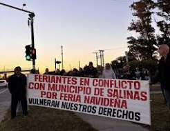
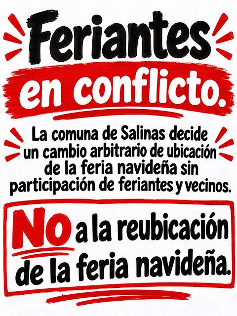
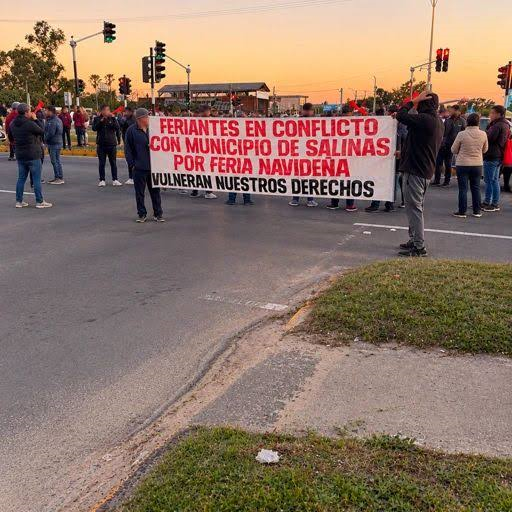
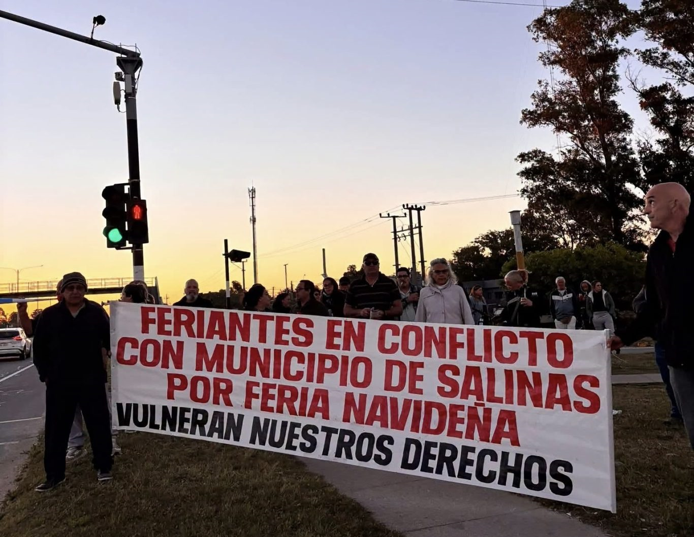

Registro Fotográfico del Conflicto
Desliza hacia abajo para ver las imágenes de las jornadas y movilizaciones.

Jornada de protesta


El sustento de decenas de familias

Apoyo de los vecinos del barrio
Comunicado en Video
Spot de Difusión / Audio Oficial
Escucha el mensaje para difusión en altoparlantes y redes:
⬇ Descargar Audio (MP3)